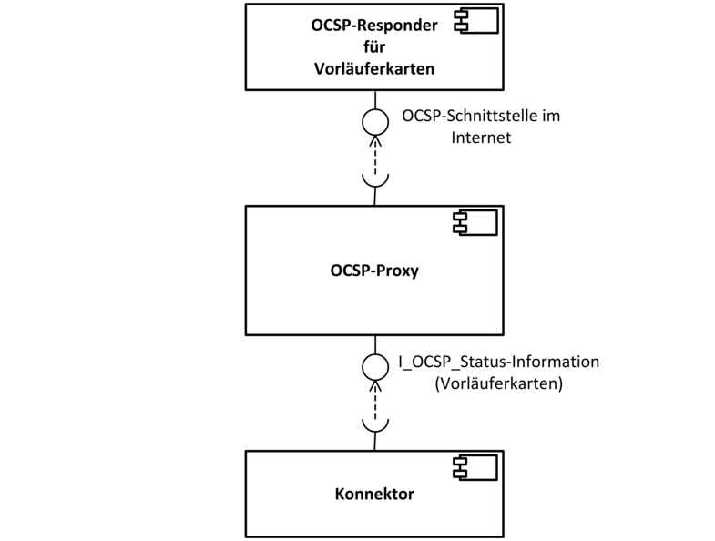
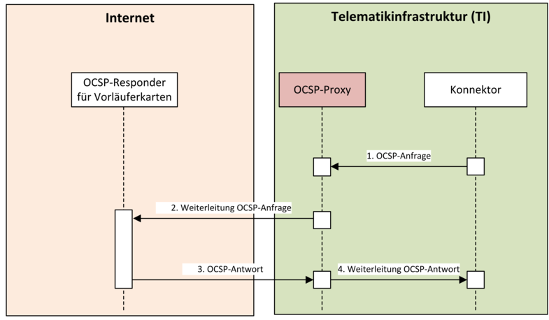

Elektronische Gesundheitskarte und Telematikinfrastruktur
Spezifikation
OCSP-Proxy
| Version | 1.9.0 |
| Revision | 571835 |
| Stand | 14.05.2018 |
| Status | freigegeben |
| Klassifizierung | öffentlich |
| Referenzierung | gemSpec_OCSP_Proxy |
Änderungen zur Vorversion
Anpassungen gemäß Änderungsliste P15.2 sind gelb markiert.
Dokumentenhistorie
| Version |
Stand |
Kap./ Seite |
Grund der Änderung, besondere Hinweise |
Bearbeitung |
|---|---|---|---|---|
| 0.0.1 |
23.12.2013 |
Initiale Erstellung |
||
| 0.0.2 |
13.01.2014 |
6 |
Erstellung Systemüberblick, TUCs und Anforderungen |
|
| 0.0.3 |
30.01.2014 |
Überarbeitung TUCs, Ergänzung Anforderungen, Erstellung Systemkontext, Zerlegung des Produkttyps und Übergreifende Festlegungen |
||
| 0.0.4 |
02.02.2014 |
Fachliche QS |
||
| 0.0.5 |
04.02.2014 |
Einarbeitung Kommentare durch QS |
||
| 1.0.0 |
06.02.2014 |
Freigegeben durch Release Board |
||
| 1.0.1 |
07.03.2014 |
Einarbeitung Kommentare der gematik |
||
| 1.1.0 |
07.03.2014 |
Freigabe durch Release-Management |
||
| 1.1.1 |
25.03.2014 |
Einarbeitung der Kommentare der gematik nach Abgleich mit Sicherheitskonzept |
||
| 1.2.0 |
25.03.2014 |
Freigabe durch Release-Management |
||
| Aufnahme der Anforderungen in das Anforderungsmanagement der gematik (Anforderungsnummern nach Nomenklatur der gematik) |
gematik |
|||
| 1.3.0 |
11.04.2014 |
freigegeben |
gematik |
|
| 1.4.0 |
01.04.2015 |
Korrekturen der Verarbeitung von QES-Zertifikaten |
||
| 24.04.2015 |
Freigabe d. Release-Management |
|||
| 1.5.0 |
05.05.2015 |
freigegeben |
gematik |
|
| 1.6.0 |
24.08.16 |
Anpassungen zum Online-Produktivbetrieb (Stufe 1) |
gematik |
|
| 1.7.0 | 16.10.16 | Anpassungen gemäß Änderungsliste |
||
| Änderungen in Vorbereitung auf das Release 1.6.3 (eIDAS) | ||||
| 1.8.0 | 06.02.17 | Anpassungen lt. Änderungsliste | gematik | |
| 1.9.0 | 14.05.18 | freigegeben | gematik |
Die vorliegende Spezifikation definiert die Anforderungen zu Herstellung, Test und Betrieb des Produkttyps OCSP-Proxy.
Das Dokument richtet sich an Hersteller und Anbieter des OCSP-Proxys der TI sowie Hersteller und Anbieter von Produkttypen, die hierzu eine Schnittstelle besitzen.
Dieses Dokument enthält normative Festlegungen zur Telematikinfrastruktur des Deutschen Gesundheitswesens. Der Gültigkeitszeitraum der vorliegenden Version und deren Anwendung in Zulassungs- oder Abnahmeverfahren wird durch die gematik GmbH in gesonderten Dokumenten (z.B. Dokumentenlandkarte, Produkttypsteckbrief, Leistungsbeschreibung) festgelegt und bekannt gegeben.
Schutzrechts-/Patentrechtshinweis
Die nachfolgende Spezifikation ist von der gematik allein unter technischen Gesichtspunkten erstellt worden. Im Einzelfall kann nicht ausgeschlossen werden, dass die Implementierung der Spezifikation in technische Schutzrechte Dritter eingreift. Es ist allein Sache des Anbieters oder Herstellers, durch geeignete Maßnahmen dafür Sorge zu tragen, dass von ihm aufgrund der Spezifikation angebotene Produkte und/oder Leistungen nicht gegen Schutzrechte Dritter verstoßen und sich ggf. die erforderlichen Erlaubnisse/Lizenzen von den betroffenen Schutzrechtsinhabern einzuholen. Die gematik GmbH übernimmt insofern keinerlei Gewährleistungen.
Spezifiziert werden in dem Dokument die von dem Produkttyp bereitgestellten (angebotenen) Schnittstellen. Benutzte Schnittstellen werden hingegen in der Spezifikation desjenigen Produkttypen beschrieben, der diese Schnittstelle bereitstellt. Auf die entsprechenden Dokumente wird referenziert (siehe auch Anhang A5).
Die vollständige Anforderungslage für den Produkttyp ergibt sich aus weiteren Konzept- und Spezifikationsdokumenten, diese sind in dem Produkttypsteckbrief des Produkttyps OCSP-Proxy verzeichnet.
Anforderungen als Ausdruck normativer Festlegungen werden durch eine eindeutige ID in eckigen Klammern sowie die dem RFC 2119 [RFC2119] entsprechenden, in Großbuchstaben geschriebenen deutschen Schlüsselworte MUSS, DARF NICHT, SOLL, SOLL NICHT, KANN gekennzeichnet.
Sie werden im Dokument wie folgt dargestellt:
<AFO-ID> - <Titel der Afo>
Text / Beschreibung
[<=]
Dabei umfasst die Anforderung sämtliche innerhalb der Textmarken angeführten Inhalte.
Der Produkttyp OCSP-Proxy wird eingesetzt, um die Statusinformation der Zertifikate der zeitlich begrenzt durch die TI unterstützten HBA-Vorläuferkarten in der TI-Plattform verfügbar zu machen.
Zusätzlich ermöglicht er das Weiterleiten von OCSP-Anfragen aus der TI an andere im Internet erreichbare OCSP-Responder für QES-Zwecke.
Im Falle von OCSP-Anfragen für End-Entity- Zertifikate leitet der OCSP-Proxy die Anfrage an den zuständigen OCSP-Responder im Internet weiter und gibt die vom OCSP-Responder zurück gelieferte OCSP-Antwort an die zertifikatsvalidierende Komponente zurück.
Nutzer des OCSP-Proxys sind die zertifikatsvalidierenden Komponenten, die
prüfen. Dabei handelt es sich lediglich um den Konnektor.
Nachfolgende Abbildung stellt die Nachbarsysteme und Nutzer des OCSP-Proxys dar.

Abbildung 1: Abb_OCSP-Proxy_001 Nachbarsysteme und Nutzer des OCSP-Proxys.
Abb_OCSP-Proxy_003 gibt einen Überblick über den Prozess der OCSP-Anfrage an den OCSP-Proxy sowie der OCSP-Antwort durch den OCSP-Proxy:

Abbildung 2: Abb_OCSP-Proxy_003 Überblick OCSP-Anfrage aus TI an OCSP-Proxy
Nachfolgende Erläuterung dient dem Verständnis der Abb_OCSP-Proxy_003.
Prozessabläufe von OCSP-Anfragen aus der TI:
1. OCSP-Anfrage aus der TI
2. Weiterleitung der OCSP-Anfrage an OCSP-Responder der Vorläuferkarte im Internet
3. Empfang der OCSP-Antwort des OCSP-Responders der Vorläuferkarte
4. Weiterleitung der OCSP-Antwort an anfragende Komponente (Konnektor) in der TI
Im folgenden Kapitel werden übergreifende Anforderungen an den OCSP-Proxy aufgeführt.
TIP1-A_5831
Der OCSP-Proxy MUSS lokal erkannte Fehler und Remote-Fehler im lokalen Protokollspeicher (FehlerLog) protokollieren.
<=
TIP1-A_5832
Der OCSP-Proxy KANN ein Security-Log für sicherheitsrelevante Ereignisse implementieren.
<=
TIP1-A_5833
Der OCSP-Proxy KANN ein Performance-Log implementieren.
<=
TIP1-A_5834
Der OCSP-Proxy KANN im Testbetrieb ein Debug-Log implementieren, das eine erweiterte Protokollierung für Testzwecke ermöglicht.
<=
TIP1-A_5835
Falls es erforderlich sein sollte, dass der OCSP-Proxy eine Protokollierung zum Zwecke der Fehler- bzw. Störungsbehebung durchführt, DARF der OCSP-Proxy NICHT personenenbezogene Daten in den Protokollen speichern.
<=
TIP1-A_5836
Falls es erforderlich sein sollte, dass der OCSP-Proxy eine Protokollierung zum Zwecke der Fehler- bzw. Störungsbehebung durchführt, DÜRFEN die Daten NICHT von unautorisierten Personen eingesehen werden.
<=
TIP1-A_5837
Der OCSP-Proxy MUSS zur Gewährleistung der Anforderungen des Datenschutzes technische Maßnahmen umsetzen, wenn deren Aufwand gegenüber organisatorischen Maßnahmen in einem angemessenen Verhältnis zum angestrebten Schutzzweck steht.
<=
TIP1-A_5838
Im Rahmen des Designs und der Implementierung des OCSP-Proxys MÜSSEN der
Der OCSP-Proxy muss die technische Schnittstelle I_OCSP_Status_Information gemäß [gemSpec_PKI#9] implementieren und in der Telematikinfrastruktur anbieten.
Über diese Schnittstelle werden die Statusinformation für Zertifikate der unterstützten HBA-Vorläuferkarten und anderer QES-Verfahren in der TI-Plattform verfügbar gemacht.
TIP1-A_5848
Der OCSP-Proxy MUSS in Form eines OCSP-Responders über das Netzwerk der Telematikinfrastruktur erreichbar sein.
<=TIP1-A_5849
Der OCSP-Proxy MUSS den technischen Use Case "TUC_OCSP-Proxy_002 OCSP-Anfragen aus der TI beantworten" gemäß Tab_OCSP-Proxy_002 umsetzen.
<=
TIP1-A_5851
Der OCSP-Proxy MUSS OCSP-Anfragen der zertifikatsvalidierenden Komponenten der TI für nonQES- und QES-EE-Zertifikate der zu unterstützenden HBA-Vorläuferkarten unverändert an den entsprechenden OCSP-Responder im Internet weiterleiten und die Antwort des OCSP-Responders an die zertifikatsvalidierenden Komponente unverändert zurückgeben.
<=TIP1-A_5852
Ein Verbindungsaufbau zu den OCSP-Respondern im Internet MUSS vom OCSP-Proxy initiiert werden.
<=TIP1-A_5853
Anfragen aus dem Internet MÜSSEN vom OCSP-Proxy abgelehnt werden.
<=TIP1-A_5855
Der OCSP-Proxy DARF OCSP-Anfragen der zertifikatsvalidierenden Komponenten der TI NICHT speichern.
<=TIP1-A_5856
Der OCSP-Proxy DARF OCSP-Antworten für die zertifikatsvalidierenden Komponenten der TI NICHT speichern.
<=TIP1-A_5857
Der OCSP-Proxy DARF OCSP-Anfragen und OCSP-Antworten NICHT protokollieren.
<=Tabelle 1: Tab_OCSP-Proxy_002 TUC_OCSP-Proxy_002 OCSP-Anfragen aus der TI beantworten
| Element |
Beschreibung |
|---|---|
| Name |
TUC_OCSP-Proxy_002 "OCSP-Anfragen aus der TI beantworten" |
| Beschreibung |
Dieser Use Case beschreibt den Prozess der Zertifikatsstatusauskunft des OCSP-Proxys bei OCSP-Anfragen für nonQES-EE- und QES-EE-Zertifikate der HBA-Vorläuferkarten und anderer QES-Verfahren. |
| Auslöser |
OCSP-Anfrage einer zertifikatsvalidierenden Komponente aus der TI |
| Vorbedingungen |
|
| Eingangsdaten |
OCSP-Anfrage |
| Komponenten |
Zertifikatsvalidierende Komponenten der TI (z. B. Konnektor), OCSP-Proxy, OCSP-Responder (der HBA-Vorläuferkarten, u.a.) |
| Ausgangsdaten |
OCSP-Antwort eines OCSP-Responders |
| Nachbedingungen |
|
| Standardablauf |
1. [OCSP-Proxy]: OCSP-Anfrage der zertifikatsvalidierenden Komponente empfangen. 2. [OCSP-Proxy]: OCSP-Anfrage an den entsprechenden OCSP-Responder im Internet weiterleiten unter Verwendung der Ziel-URL im Internet aus der empfangenen OCSP-Anfrage. 3. [OCSP-Proxy]: OCSP-Antwort des OCSP-Responders im Internet empfangen. 4. [OCSP-Proxy]: OCSP-Antwort des OCSP-Responders im Internet an zertifikatsvalidierende Komponente zurückgeben. |
| Varianten/Alternativen |
|
| Fehlerfälle |
2a [OCSP-Proxy]: Der OCSP-Responder im Internet ist nicht erreichbar: OCSP-Response mit einer unsignierten Error-Response des Typs "internalError" (siehe [RFC2560#2.3]) zurückgeben. |
| Nichtfunktionale Anforderungen |
|
| Anmerkungen |
Die URL, mit der der OCSP-Proxy-Responder angesprochen wird, enthält auch die Ziel-URL des OCSP-Responders im Internet (s. [gemSpec_VPN_ZugD#TIP1-A_4322]). |
| Zugehörige Diagramme |
Neben dem OCSP-Proxy für die Produktivumgebung (PU) wird ein davon separierter OCSP-Proxy für Test- und Referenzzwecke betrieben.
| Kürzel |
Erläuterung |
|---|---|
| AIA |
Authority Information Access |
| CA |
Certificate Authority |
| CERT |
Computer Emergency Response Team |
| DNS |
Domain Name System |
| DNSSEC |
Domain Name System Security Extensions |
| EE |
End Entity |
| FQDN |
Fully Qualified Domain Name |
| HBA |
Heilberufsausweis |
| ISO |
Internationale Organisation für Normung |
| OCSP |
Online Certficate Status Protocol |
| ORS 1 |
Online-Rollout (Stufe 1) |
| OWASP |
Open Web Application Security Project |
| QES |
Qualifizierte elektronische Signatur |
| TI |
Telematikinfrastruktur |
| VDA |
Vertrauensdiensteanbieter |
| URI |
Uniform Resource Identifier |
| Begriff |
Erläuterung |
|---|---|
| Funktionsmerkmal |
Der Begriff beschreibt eine Funktion oder auch einzelne, eine logische Einheit bildende Teilfunktionen der TI im Rahmen der funktionalen Zerlegung des Systems. |
Das Glossar wird als eigenständiges Dokument, vgl. [gemGlossar] zur Verfügung gestellt.
Die nachfolgende Tabelle enthält die Bezeichnung der in dem vorliegenden Dokument referenzierten Dokumente der gematik zur Telematikinfrastruktur. Der mit der vorliegenden Version korrelierende Entwicklungsstand dieser Konzepte und Spezifikationen wird pro Release in einer Dokumentenlandkarte definiert, Version und Stand der referenzierten Dokumente sind daher in der nachfolgenden Tabelle nicht aufgeführt. Deren zu diesem Dokument passende jeweils gültige Versionsnummer sind in der aktuellsten, von der gematik veröffentlichten Dokumentenlandkarte enthalten, in der die vorliegende Version aufgeführt wird.
| [Quelle] |
Herausgeber: Titel |
|---|---|
| [gemGlossar] |
gematik: Glossar der Telematikinfrastruktur |
| [gemSpec_PKI] |
gematik: Übergreifende Spezifikation PKI |
| [gemSpec_VPN_ZugD] |
gematik: Spezifikation VPN-Zugangsdienst |
| [Quelle] |
Herausgeber (Erscheinungsdatum): Titel |
|---|---|
| [CC31] |
Common Criteria for Information Technology Security Evaluation, Version 3.1, September 2012 |
| [CERT] |
CERT Secure Coding; http://www.cert.org/secure-coding/ |
| [COMMON-PKI] |
T7 & TeleTrust (20.01.2009): Common PKI Spezifikation, Version 2.0 http://www.t7ev.org/themen/entwickler/common-pki-v20-spezifikation.html |
| [ISO27001] |
Information technology – Security techniques – Information security management systems – Requirements |
| [OWASP] |
OWASP Development Guide Project; http://www.owasp.org/index.php/Category:OWASP_Guide_Project |
| [RFC 3986] |
RFC 3986 (Januar 2005): Uniform Resource Identifier (URI): Generic Syntax http://tools.ietf.org/html/rfc3986 |